<title>System3 线上验收</title>
<link rel="stylesheet" href="https://fonts.googleapis.com/css2?family=Noto+Serif+SC:wght@600;700&family=Noto+Sans+SC:wght@400;500;700&family=IBM+Plex+Mono:wght@400;500&display=swap">
<style>
/* Layout: one reading column for verdicts and findings; screenshots run full width beneath each scenario. */
:root {
  --bg: #f6f7f9; --surface: #ffffff; --ink: #141a24; --muted: #5a6474; --line: #dde2ea;
  --accent: #2346c7; --accent-soft: #e6ebfb; --ok: #1f7a4d; --ok-soft: #e3f3ea; --warn: #b8670a; --warn-soft: #fbf0e1; --bad: #b42318; --bad-soft: #fdecea;
  --display: "Noto Serif SC", "Songti SC", serif; --body: "Noto Sans SC", "PingFang SC", system-ui, sans-serif; --mono: "IBM Plex Mono", ui-monospace, Menlo, monospace;
}
@media (prefers-color-scheme: dark) { :root:not([data-theme="light"]) {
  --bg: #0f131a; --surface: #161c26; --ink: #e7ebf2; --muted: #9aa5b6; --line: #2a3342; --accent: #8ea7ff; --accent-soft: #1d2747;
  --ok: #63c793; --ok-soft: #173326; --warn: #f0a64a; --warn-soft: #34261a; --bad: #f28b82; --bad-soft: #3a1d1b; color-scheme: dark } }
:root[data-theme="dark"] {
  --bg: #0f131a; --surface: #161c26; --ink: #e7ebf2; --muted: #9aa5b6; --line: #2a3342; --accent: #8ea7ff; --accent-soft: #1d2747;
  --ok: #63c793; --ok-soft: #173326; --warn: #f0a64a; --warn-soft: #34261a; --bad: #f28b82; --bad-soft: #3a1d1b; color-scheme: dark }
body { background: var(--bg); color: var(--ink); font: 16px/1.75 var(--body); padding-inline: 20px; padding-block: 40px 72px; }
main { max-width: 1240px; margin: 0 auto; display: grid; gap: 48px; }
main > * { width: 100%; max-width: 900px; justify-self: center; }
main > .wide { max-width: 1240px; }
h1, h2, h3 { font-family: var(--display); line-height: 1.3; margin: 0; text-wrap: balance; }
h1 { font-size: clamp(28px, 4.5vw, 40px); } h2 { font-size: 24px; } h3 { font-size: 18px; }
p { margin: 0; } section { display: grid; gap: 16px; min-width: 0; }
.eyebrow { font: 500 12px/1.4 var(--mono); letter-spacing: 0.12em; text-transform: uppercase; color: var(--accent); }
.muted { color: var(--muted); }
.table-wrap { overflow-x: auto; border: 1px solid var(--line); border-radius: 6px; background: var(--surface); }
table { border-collapse: collapse; width: 100%; min-width: 760px; font-size: 14px; line-height: 1.6; }
th, td { text-align: left; vertical-align: top; padding: 10px 14px; border-bottom: 1px solid var(--line); }
thead th { font-weight: 500; color: var(--muted); background: var(--bg); }
tr:last-child td { border-bottom: 0; }
td.n { font-family: var(--mono); font-variant-numeric: tabular-nums; white-space: nowrap; }
.pill { display: inline-block; font: 500 12px/1.6 var(--mono); padding: 0 8px; border-radius: 999px; white-space: nowrap; }
.pass { color: var(--ok); background: var(--ok-soft); } .fixed { color: var(--accent); background: var(--accent-soft); }
.gap { color: var(--warn); background: var(--warn-soft); } .fail { color: var(--bad); background: var(--bad-soft); }
.shots { display: grid; grid-template-columns: repeat(auto-fit, minmax(380px, 1fr)); gap: 16px; }
figure { margin: 0; border: 1px solid var(--line); border-radius: 6px; background: var(--surface); overflow: hidden; display: grid; }
figure img { display: block; width: 100%; height: auto; border-bottom: 1px solid var(--line); }
figcaption { padding: 10px 14px; font-size: 14px; color: var(--muted); }
figcaption b { color: var(--ink); font-weight: 500; }
ul.list { margin: 0; padding-left: 20px; display: grid; gap: 8px; }
code { font: 13px var(--mono); background: var(--bg); border: 1px solid var(--line); border-radius: 4px; padding: 0 4px; }
footer { font-size: 13px; color: var(--muted); border-top: 1px solid var(--line); padding-top: 16px; }
@media (max-width: 560px) { .shots { grid-template-columns: 1fr; } body { font-size: 15px; } }
</style>

<main>
  <header style="display:grid;gap:10px">
    <div class="eyebrow">线上验收 · prd · 2026-10-04</div>
    <h1>System3 线上验收：真实实现了什么</h1>
    <p class="muted">在生产服务器 <code>prd</code> 上用真实浏览器逐项操作，路由与委派场景运行在启用公网域名后的版本上，停止场景运行在把委派固定为前台的修复版本上。浏览器经 SSH 隧道访问同一服务；公网域名 <code>system3.xdan.work</code> 的 TLS、Basic Auth 与登录链路另用 curl 逐步验证。委派结果用 agent 看不到的隐藏测试独立验收。</p>
  </header>

  <section class="wide">
    <div class="eyebrow">结论</div>
    <h2>能力与体验一览</h2>
    <div class="table-wrap"><table>
      <thead><tr><th>能力</th><th>结果</th><th>实测</th><th>说明</th></tr></thead>
      <tbody>
        <tr><td>简单问题 → Flash</td><td><span class="pill pass">通过</span></td><td class="n">整轮 10 s</td><td>路由说明 5.0 s 才出现：服务空闲后首次请求，Jev 连接是冷的</td></tr>
        <tr><td>推理问题 → Pro</td><td><span class="pill pass">通过</span></td><td class="n">说明 2.8 s · 整轮 46 s</td><td>运行中输入框显示“自动 · deepseek-v4-pro”，结束后恢复 Flash</td></tr>
        <tr><td>复杂专业问题 → GPT-5.6 Sol</td><td><span class="pill pass">通过</span></td><td class="n">说明 1.3 s · 整轮 49 s</td><td>限定 600 字后耗时可接受；不限长度时曾用 553 s（中转约 18 token/s）</td></tr>
        <tr><td>追问</td><td><span class="pill pass">通过</span></td><td class="n">决策 0.77 s</td><td>Jev 以 0.94 再次选择 GPT-5.6，由同一档回答</td></tr>
        <tr><td>“交给 Codex 做” → 直接委派</td><td><span class="pill pass">通过</span></td><td class="n">说明 2 s</td><td>决策记录 <code>explicit: true</code>，不询问 Jev</td></tr>
        <tr><td>委派结果</td><td><span class="pill pass">通过</span></td><td class="n">353 s · 隐藏测试 13/13</td><td>主模型先检查项目、准备测试环境再委派，Codex 47 s 后启动</td></tr>
        <tr><td>运行中补充说明</td><td><span class="pill pass">通过</span></td><td class="n">0.6 s 送达</td><td>Codex 按要求写出 README；卡片显示“Added at 24 s”</td></tr>
        <tr><td>补充说明传给主模型</td><td><span class="pill fixed">已修复</span></td><td class="n">—</td><td>后台委派时主模型看不到补充说明，把 README 当成多余内容；改为前台委派后由工具结果复述</td></tr>
        <tr><td>停止委派</td><td><span class="pill fixed">已修复</span></td><td class="n">1 s 内停止</td><td>修复前：后台委派时停止只结束本轮，Codex 继续改文件；修复后卡片显示“codex stopped”，无残留进程</td></tr>
        <tr><td>刷新恢复</td><td><span class="pill pass">通过</span></td><td class="n">—</td><td>路由说明、“codex finished”、补充记录在刷新后都保留</td></tr>
        <tr><td>公网域名</td><td><span class="pill pass">通过</span></td><td class="n">curl 逐步验证</td><td>无密码 401；Basic Auth 后 token 换 cookie 303，首页 200；本机浏览器工具因代理无法直连，需在真实浏览器确认</td></tr>
        <tr><td>历史轮次的路由说明</td><td><span class="pill gap">体验缺口</span></td><td class="n">—</td><td>只有最新一轮显示由谁处理，翻看历史看不到前几轮的路由</td></tr>
        <tr><td>委派时的输入框标签</td><td><span class="pill gap">体验缺口</span></td><td class="n">—</td><td>显示“Auto deepseek-v4-flash”，主模型确为 Flash，但容易误解为自动选了 Flash 来回答</td></tr>
      </tbody>
    </table></div>
  </section>

  <section class="wide">
    <div class="eyebrow">入口决策</div>
    <h2>按难度分到不同档位，输入框显示本轮模型</h2>
    <div class="shots">
      <figure>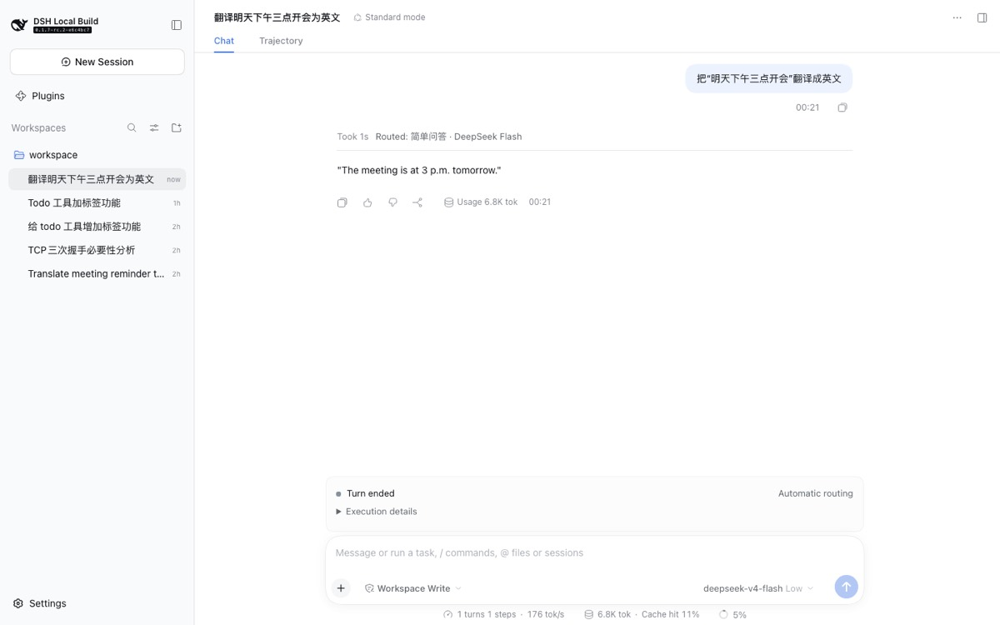<figcaption><b>简单问题</b>：轮次开头显示“Routed: 简单问答 · DeepSeek Flash”。</figcaption></figure>
      <figure>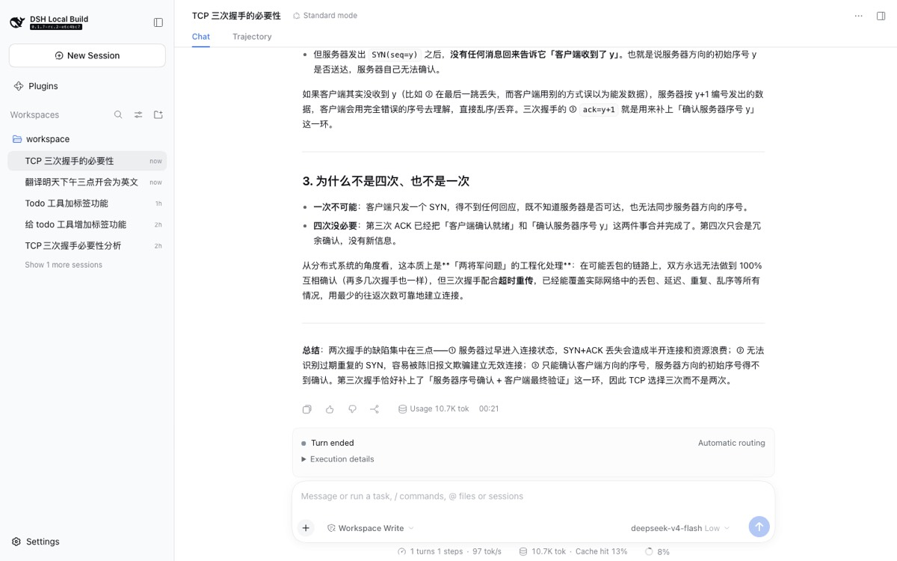<figcaption><b>推理问题</b>：路由到 DeepSeek Pro。</figcaption></figure>
      <figure>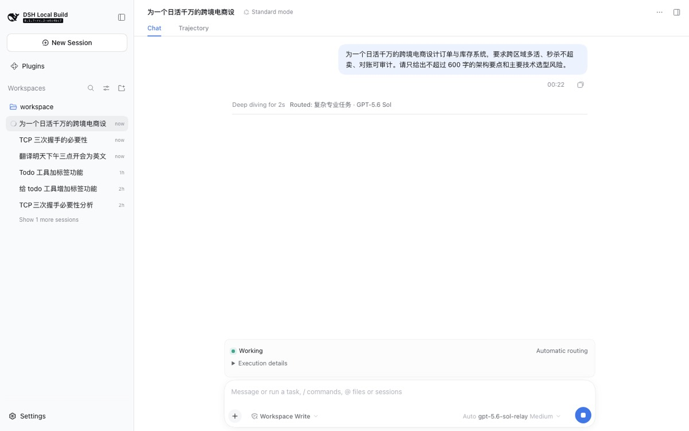<figcaption><b>复杂问题运行中</b>：路由到 GPT-5.6 Sol，输入框标签为“Auto gpt-5.6-sol-relay Medium”。</figcaption></figure>
    </div>
  </section>

  <section class="wide">
    <div class="eyebrow">委派与过程掌控</div>
    <h2>一句话交给 Codex，过程可见、可补充、可停止</h2>
    <div class="shots">
      <figure>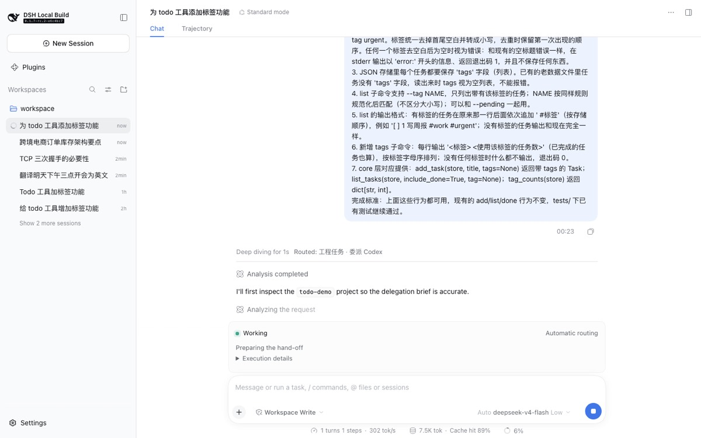<figcaption><b>直接委派</b>：说“交给 Codex 做”，2 秒内显示“Routed: 工程任务 · 委派 Codex”。</figcaption></figure>
      <figure>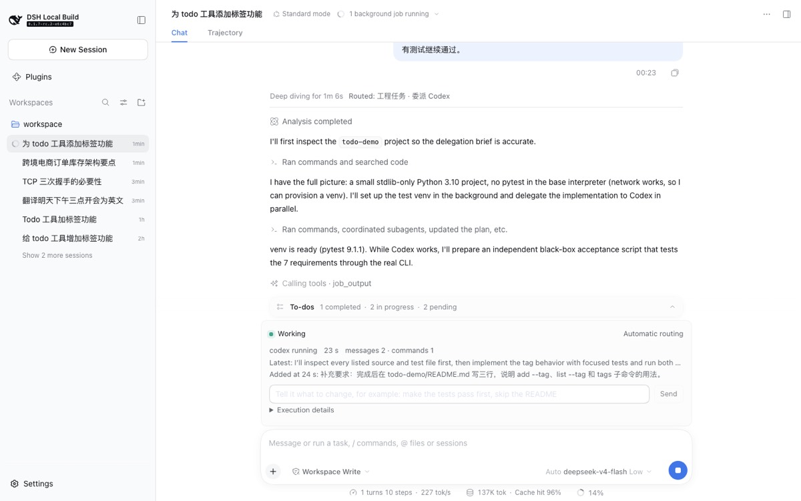<figcaption><b>运行中补充说明</b>：卡片显示步骤计数、Codex 最近说明和“Added at 24 s”。</figcaption></figure>
      <figure>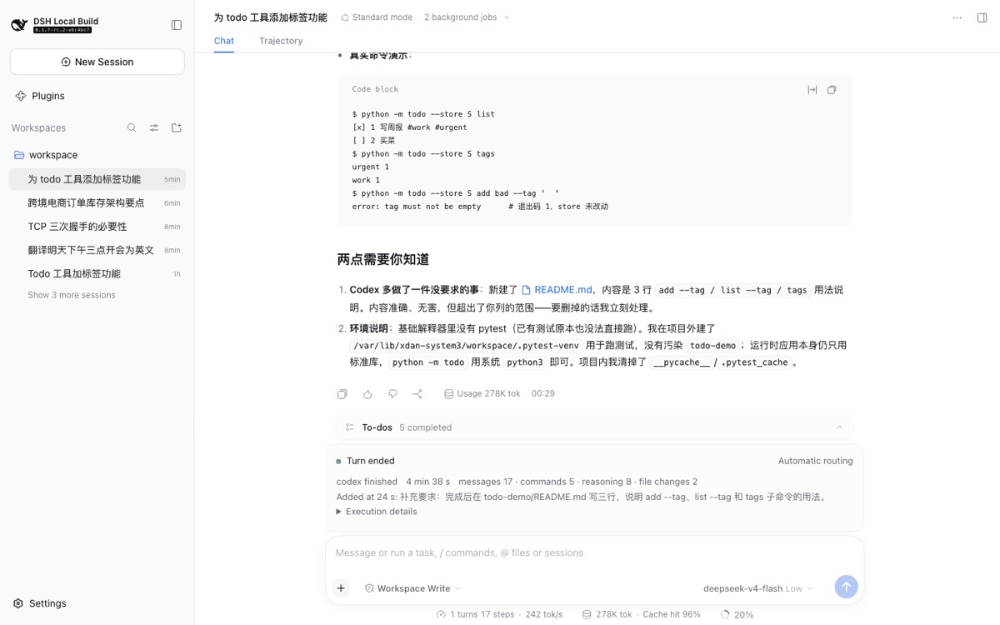<figcaption><b>刷新恢复</b>：刷新后仍显示“codex finished 4 min 38 s”和补充记录；这次是后台委派，主模型把 README 视为多余，促成了前台修复。</figcaption></figure>
      <figure>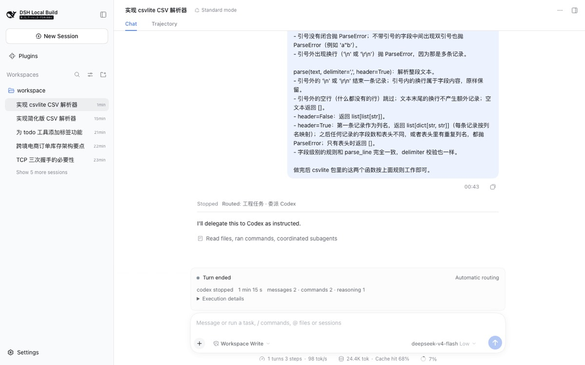<figcaption><b>停止（修复后）</b>：点击停止 1 秒内卡片显示“codex stopped 1 min 15 s”，本轮结束。</figcaption></figure>
    </div>
  </section>

  <section class="wide">
    <div class="eyebrow">pilot 前三项（下午发布）</div>
    <h2>过程监督、线路健康、委派交接包</h2>
    <div class="shots">
      <figure>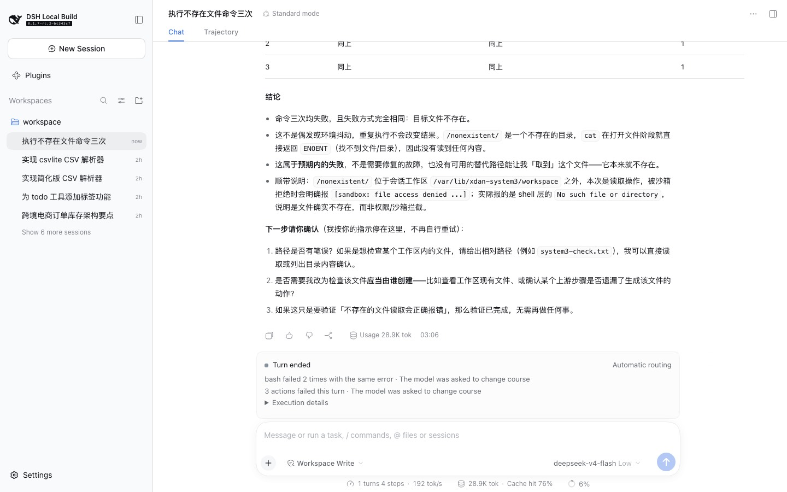<figcaption><b>同一错误重复</b>：让模型连续执行一个必然失败的命令。dock 显示“bash failed 2 times with the same error”和“3 actions failed this turn”，模型回复“我按你的指示停在这里，不再自行重试”，并列出三个选项请用户确认。</figcaption></figure>
      <figure>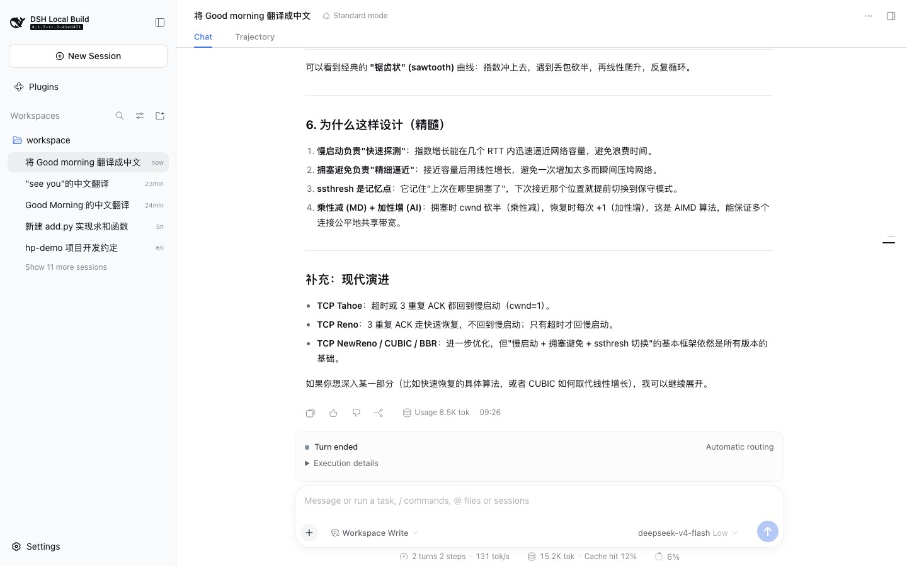<figcaption><b>历史轮次保留路由</b>：第二轮发出后，第一轮标题仍显示“Routed: 简单问答 · DeepSeek Flash”。</figcaption></figure>
      <figure>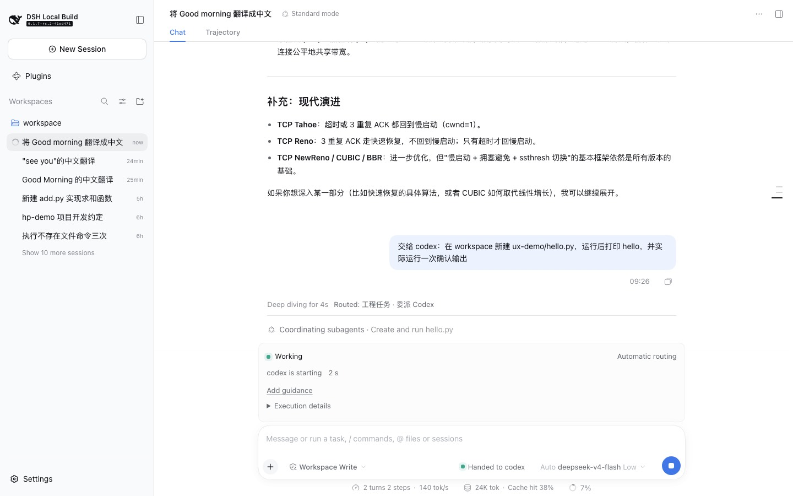<figcaption><b>委派时的输入框</b>：模型选择器左侧显示“Handed to codex”，右侧仍是负责协调的 deepseek-v4-flash。</figcaption></figure>
      <figure>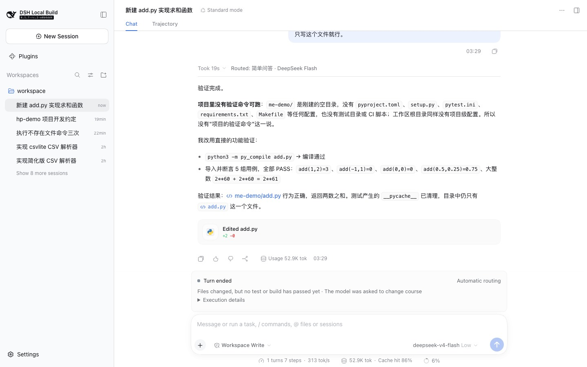<figcaption><b>修改后缺少验证</b>：只要求写一个文件。轮次结束前 System3 提示一次，模型随后运行 <code>py_compile</code> 和行内断言检查，清理缓存后才回复。</figcaption></figure>
    </div>
    <ul class="list">
      <li><b>委派交接包（端到端）</b>：先说“函数名一律用 snake_case；不要创建或修改任何 README 文件”，下一条说“交给 codex 写 temperature.py 并测试”。Jev 用 915 毫秒判定前一条是要求（概率 0.998），原文附进委派指令；主模型在给 Codex 的任务里写了“硬性约定（来自用户前面的话，验收时逐条检查）”。Codex 的产出：函数为 <code>celsius_to_fahrenheit</code> / <code>fahrenheit_to_celsius</code>，没有 README；装上 pytest 后 20 个测试全部通过。</li>
      <li><b>交接要求的识别率</b>：部署中的 Jev 在 6 段带标注的对话上，初版问法召回率只有 0.38（漏掉“不要改 README”“提交前必须通过 pytest”这类项目规矩）；改为在每个问题里引用原话、问“执行时仍然有效的工作要求”后，召回率和精确率都是 1.0，每次约 0.6 秒。阈值定为 0.3。</li>
      <li><b>线路健康</b>：已上线，默认只避开明显故障的线路（首字超过 45 秒、低于每秒 10 个 token、或错误超过一半）。阈值来自 prd 会话日志：GPT-5.6 中转首字约 26 秒，各线路输出都在每秒 100 个 token 以上。本次没有线路达到降级条件，所以界面上没有出现“已避开较慢的线路”。</li>
      <li><b>验收中发现的缺陷</b>：主模型用 <code>pytest -v 2&gt;&amp;1 | tail</code> 核对 Codex 结果，pytest 没装，但管道让退出码变成 0，监督把它当成了通过的验证。已修复：带管道的命令不再算验证证据，发布后复测“修改后缺少验证”能正常触发。</li>
    </ul>
  </section>

  <section class="wide">
    <div class="eyebrow">公网访问（10-06，去掉 Basic Auth 后）</div>
    <h2>没有密码弹窗，登录一次后跨发布保持</h2>
    <div class="shots">
      <figure><figcaption><b>未登录</b>：全新浏览器打开 system3.xdan.work，不再弹出密码框，返回 401 和 DSH 的提示“authentication required”。</figcaption></figure>
      <figure>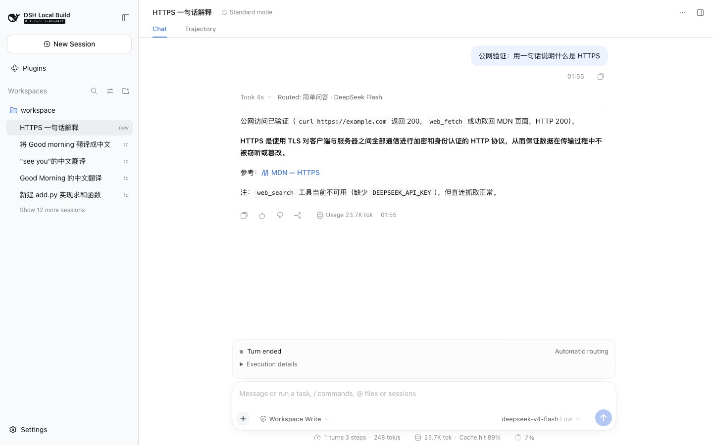<figcaption><b>登录后使用</b>：打开一次登录链接后，地址栏里的 token 被去掉；提问后显示“Routed: 简单问答 · DeepSeek Flash”，8 秒完成。</figcaption></figure>
    </div>
    <ul class="list">
      <li>刷新页面、重启服务后再访问，都保持登录（会话列表正常显示）。</li>
      <li>全新浏览器第一次进入会看到 DSH 自带的“Internal Testing Notice”，点 Continue 后才能输入；英文、面向开发者，演示前可考虑替换或关闭。</li>
      <li>未登录页面只有一行英文“reopen the URL printed by dsh web”，对外部访客不友好。</li>
      <li>模型回复提到 <code>web_search</code> 不可用（缺少 <code>DEEPSEEK_API_KEY</code>），联网搜索在 prd 上没有配置。</li>
    </ul>
  </section>

  <section>
    <div class="eyebrow">验收中发现并处理的问题</div>
    <h2>问题与状态</h2>
    <ul class="list">
      <li><b>停止不能叫停后台委派</b>：主模型以后台任务启动 Codex，停止只结束本轮，Codex 停止后仍在修改文件。已把委派固定为前台（<code>enableRunInBackground: false</code>），发布后复测 1 秒内停止、无残留进程。</li>
      <li><b>后台委派时补充说明不进主模型</b>：补充说明只随前台结果复述，后台任务结果没有。前台修复后不再出现；将来恢复后台委派时，后台结果也要复述补充说明，停止也要能结束后台任务。</li>
      <li><b>空闲后首次路由慢</b>：复测未再出现，未改代码。重启服务后第一条输入 1.1 秒显示路由，新会话 1.5 秒；prd 日志里空闲 2 小时后的入口决策也只用 0.7 秒，到 Jev 的新连接只需约 0.3 秒。之前的 5 秒发生在 Jev 连接和预热尚未配置好的时候。</li>
      <li><b>历史轮次不保留路由说明</b>：已修复。投影保留最近 100 次进入轮次的入口决策，每个轮次标题显示自己的路由；复测同一会话两轮分别显示“简单问答 · DeepSeek Flash”和“推理分析 · DeepSeek Pro”。</li>
      <li><b>委派时输入框只显示“Auto Flash”</b>：已修复。委派运行期间，模型选择器左侧显示“Handed to codex”（准备阶段显示“Handing off”），模型选择器仍显示负责协调的模型；轮次结束后标记消失。</li>
      <li><b>主模型委派前做了较多准备</b>：检查项目、建测试环境后才委派，Codex 47 秒后才启动。结果更可靠，但用户等待更久。</li>
    </ul>
  </section>

  <section>
    <div class="eyebrow">未覆盖</div>
    <h2>这次没有验收的能力</h2>
    <ul class="list">
      <li>带图片的输入（只路由到能读图的模型）：规则已实现并有单元测试，本次未在浏览器上传图片。</li>
      <li>Claude Code 委派、本机模型与隐私路由：尚未接入。</li>
      <li>启动过慢、停滞、超时提醒：之前的线上测试已触发；本次运行未超过阈值，未再出现。</li>
      <li>公网域名下的完整浏览器流程：需要在你的浏览器里确认一次。</li>
      <li>线路降级后自动避开：单元测试覆盖；线上没有线路达到阈值，未实际触发。</li>
      <li>交接包对 Codex 遵守率的对照（有/无交接包各跑多次）：本次只做了一次端到端验收，没有做成对比实验。</li>
    </ul>
  </section>

  <footer>数据来源：prd 上的会话日志与浏览器截图，隐藏测试来自 <code>packages/experimental/system3/tests/fixtures/delegation-calibration/</code>。</footer>
</main>
